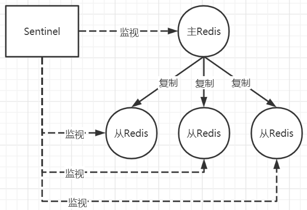
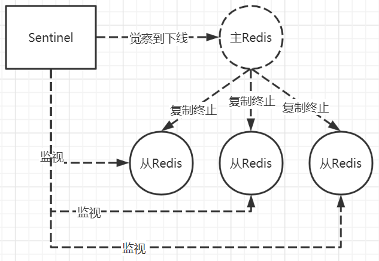
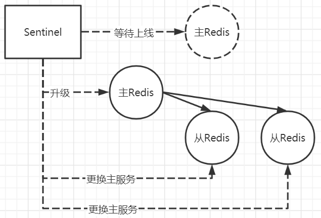

Redis主从复制存在的问题
在Redis主从架构中存在一个问题，那就是当服务出现宕机时需要手动恢复：
- 从Redis宕机：如果从Redis宕机了，只需要将从Redis重新启动即可，从Redis在重新启动后会自动加入到主从架构中，并且自动完成数据的同步。在Redis 2.8版本后，从Redis断线后恢复只需要执行增量同步。
- 主Redis宕机：当主Redis宕机了之后需要在从Redis中执行slaveof no one命令断开主从关系，并且将从Redis提升为主Redis继续服务。最后将宕机的主Redis重新启动并执行slaveof命令将其设置为其他主Redis的从Redis。
手动进行恢复的过程比较麻烦并且容易出错，Redis为了解决这个问题提供了哨兵机制。
哨兵机制的高可用
由一个或多个Sentinel实例组成的Sentinel系统可以监视任意多个主服务器，以及这些主服务器属下的所有从服务器，并在被监视的主服务器进入下线状态时，自动将下线主服务器属下的某个从服务器升级为新的主服务器。
正常状态：

主服务宕机：

选举新的主服务：

哨兵机制的定时监控
哨兵只需要配置对主节点的监控即可，通过向主节点发送info来获取从节点的信息，当有新的从节点加入时，哨兵可以马上感知到。然后每个哨兵节点每10秒会向主节点和从节点发送info命令以获取最新的拓扑结构图
每个哨兵节点每隔2秒会向Redis数据节点的指定频道上发送该哨兵节点对于主节点的判断信息，以及自身哨兵节点的信息。其他的哨兵节点都订阅了该频道，也就是哨兵节点之间在互相通信，能够了解其他哨兵节点的信息以及其他哨兵节点对主节点的判断。这种通信是通过消息的publish和subscribe来完成的。
每隔哨兵节点每隔1秒会向主节点、从节点以及其他哨兵节点发送一次ping命令进行心跳检测，这是哨兵节点用来判断节点是否正常的重要依据。
主观下线SDOWN
哨兵会以每秒一次的频率向所有与其建立了命令连接的实例发送ping命令，通过判断ping回复是有效回复还是无效回复来判断实例是否在线，对于该哨兵来说它对某个服务的判断是主观的。
sentinel配置文件中的down-after-milliseconds设置了判断主观下线的时间长度，如果实例在down-after-milliseconds毫秒内返回的都是无效回复，那么sentinel会认为该实例已主观下线，然后修改其flags状态为SRI_S_DOWN。如果多个sentinel同时监视一个服务，有可能存在多个sentinel的down-after-milliseconds配置不同。
客观下线ODOWN
当被认为主观下线的节点是主节点时，此时该哨兵节点会通过指令sentinel is-masterdown-by-addr寻求其他哨兵节点对该主节点的判断，如果其他的哨兵也认为该主节点主观下线了，且主观下线的票数超过了quorum选举个数，此时哨兵节点就认为该主节点确实有问题，主观下线就变成了客观下线。也就是大部分哨兵节点都同意下线操作，该下线就是客观的。
哨兵leader选举机制
如果主节点被判定为客观下线，这时就需要选取一个哨兵节点来完成故障转移工作。首先，每个在线的哨兵节点都可以成为领导者，当它确认主节点下线时，会向其他哨兵发送is-master-down-by-addr命令，征求其他哨兵节点的判断并申请将自己设置为领导者，然后处理故障转移。其他哨兵节点收到此命令时，可以同意或拒绝它成为领导者。如果发起选举的哨兵节点发现自己选举的票数大于等于哨兵节点总数除2加1时，它就会成为领导者。如果没有达到数量，则继续选举。
自动故障迁移机制
在sentinel的状态数据结构中保存了主服务的所有从服务信息，由leader选举机制选举出来的哨兵会从服务列表中挑选出新的主服务，其规则如下：
- 首先过滤掉主观下线的节点
- 选择slave-priority最高的节点，如果没有则继续选择
- 选择出复制偏移量最大的从节点，因为复制偏移量越大其数据复制的越完整，如果有就返回，没有就继续选择
- 选择run_id最小的节点
通过slaveof no one命令让选出来的从节点成为主节点，并通过slaveof命令让其他节点成为自己的从节点。当已下线的服务重新上线时，sentinel会向其发送slaveof命令，让其也成为自己的从节点。
哨兵的作用
- 哨兵会不断地检查Master和Slave节点是否运行正常
- 当被监控的Redis节点出现问题时，哨兵可以通过API向管理员或者其他应用程序发送通知
- 当一个Master节点不能正常工作时，哨兵会进行自动故障迁移操作
哨兵节点的搭建
使用1主1从1哨兵来进行测试
1 | # 拷贝Redis源码包中的sentinel.conf文件到sentinel的执行文件目录 |